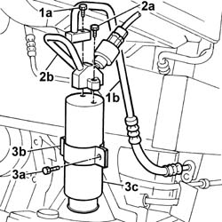
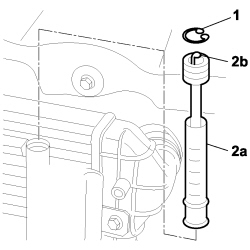

5040A44 air conditioner dehydrating filter/accumulator - r+r
- Path
- Procedures > 50 AUXILIARY UNITS > 5040 AIR CONDITIONING CASING AND COMPONENTS > 5040A air conditioner coolant circuit > 5040A44 air conditioner dehydrating filter/accumulator - r+r
- Kind
- repair procedure (removal / refitting; the operation number is the code)
- Applies to
- all engines; all production periods
- Interactive page
- https://sloeber94.github.io/elrnDB-fDbl/en/#/2584824
Applies to: engines: 1.2 8v, 1.6 16v, 1.3 JTD 16V, 1.9 JTD 8V, 1.9 DIESEL; all production periods
 Removing
Removing
 Refitting
RefittingPlace the car on a ramp.
Op. 5040A10 AIR CONDITIONING REFRIGERANT CIRCUIT - DRYING AND REPRESSURIZING
Disconnect the battery negative terminal.
Op. 7055B54 PROTECTION/GUARD UNDER ENGINE - R.R.
1. Undo the bolt (1a) and disconnect the pipe (1b) to the condenser, dehydrating filter side.
2. Undo the bolt (2a) and disconnect the pipe (2b) to the expansion valve, dehydrating filter side.
3. Slacken the bolt (3a) on the retaining band (3b), and remove the dehydrating filter (3c).

Applies to: engines: 1.2 8v, 1.6 16v, 1.3 JTD 16V, 1.9 JTD 8V, 1.9 DIESEL; all production periods
Refitting
RemovingRefit the dehydrating filter in its seating and tighten the bolt on the retaining collar.
Connect the pipes from the dehydrating filter to the expansion valve and the condenser, securing them with the bolts.
Op. 7055B54 PROTECTION/GUARD UNDER ENGINE - R.R.
Connect the battery negative terminal.
Op. 5040A10 AIR CONDITIONING REFRIGERANT CIRCUIT - DRYING AND REPRESSURIZING
Remove the vehicle from the ramp.
Applies to: engines: 1.4 8v; production: da 12/03; only with equipment: MY 2005
Removing
RefittingOp. 0010T84 COOLANT FOR AIR CONDITIONING SYSTEM - DEHYDRATE AND RECHARGE
Op. 7055B08 GRILLE (ONE) ON FRONT BUMPER - R.R

Applies to: engines: 1.4 8v; production: da 12/03; only with equipment: MY 2005
Applies to: engines: 1.4 8v; production: da 12/03; only with equipment: MY 2005
Refitting
RemovingOp. 7055B08 GRILLE (ONE) ON FRONT BUMPER - R.R
Op. 0010T84 COOLANT FOR AIR CONDITIONING SYSTEM - DEHYDRATE AND RECHARGE
Topics linked from this page (7)
- 0010T84 coolant for air conditioning system dehydrate and recharge
- 5040 AIR CONDITIONING CASING AND COMPONENTS
- 5040A10 Air conditioning refrigerant CIRCUIT - Draining and Refilling
- 7055B08 GRILLE (ONE) ON FRONT BUMPER - R.R
- 7055B54 under-engine guard - r r
- 7210E10 R.R. FRONT BUMPER
- A001 BATTERY